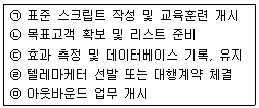
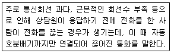
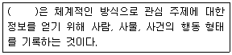
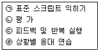
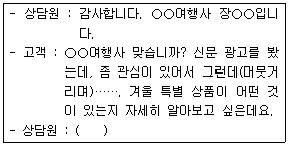

텔레마케팅관리사 (2005-08-07 기출문제)
1과목: 판매관리
1. 제품 수명주기에 있어서 성숙기의 특징은?
- 원가가 높다.
- 혁신적인 고객이 제품을 산다.
- 경쟁자가 거의 없다.
- 판매가 절정에 이른다.
(정답률: 알수없음)

2. 아웃바운드 텔레마케팅의 성공요소라고 할 수 없는 것은?
- 명확한 고객데이터의 확보
- 쌍방향 의사소통을 위한 정교한 스크립트
- 주력상품, 서비스의 개발 및 제공
- 무차별적 통화를 통한 공격적 영업 자세
(정답률: 알수없음)
3. 아웃바운드 텔레마케팅 도입절차가 올바른 순서대로 나열된 것은?

- ㉡ - ㉣ - ㉠ - ㉤ - ㉢
- ㉣ - ㉤ - ㉠ - ㉡ - ㉢
- ㉠ - ㉡ - ㉢ - ㉣ - ㉤
- ㉤ - ㉡ - ㉣ - ㉠ - ㉢
(정답률: 알수없음)
4. 아웃바운드 텔레마케팅의 전략적 활용방안 중 판매촉진의 방법으로 볼 수 있는 것은?
- 신상품, 고가상품 대체판매 정보제공 및 촉진
- 수요예측 조사
- 소비동향 조사
- 대금, 미수금 독촉
(정답률: 알수없음)
5. 데이터베이스 마케팅을 근간으로 하는 마케팅이 아닌 것은?
- 프리퀀시(Frequency) 마케팅
- 원투원(One to One) 마케팅
- 릴레이션십(Relationship) 마케팅
- 니치(Niche) 마케팅
(정답률: 알수없음)
6. CRM에 대한 설명으로 옳지 않은 것은?
- CRM은 점진적으로 고객의 행동을 변화시켜 고객과 기업 간의 결속을 강화한다.
- CRM은 시장점유율보다는 고객의 소득에 대한 점유율로 방향전환을 요구한다.
- CRM은 고객과의 관계 가치를 극대화하는 것이다.
- CRM은 고객의 즉각적 반응 또는 판매를 유도하는 것이다.
(정답률: 알수없음)
7. 마케팅 믹스의 구성 요소에 해당되지 않는 것은?
- 제품(Product)
- 완벽(Perfect)
- 가격(Price)
- 촉진(Promotion)
(정답률: 알수없음)
8. 코틀러(Kotler. P)가 말하는 제품의 3가지 수준에 해당하지 않는 것은?
- 핵심 제품
- 유형 제품
- 포괄 제품
- 소비 제품
(정답률: 알수없음)
9. 구매 정보의 세분화에 해당하지 않는 것은?
- 구매일자
- 구매빈도
- 구매가격
- 구매심리
(정답률: 알수없음)
10. 남이 아직 모르는 좋은 곳, 빈틈을 찾아 그 곳을 공략하는 마케팅 전략은?
- 니치 마케팅
- 마이크로 마케팅
- 무점포 마케팅
- 바이러스 마케팅
(정답률: 알수없음)
11. ASA(Average Speed Answer)에 대한 설명으로 옳은 것은?
- 걸려온 전화를 처리하는 데 걸리는 평균시간
- 고객이 상담원과 통화하기 위해 기다린 평균시간
- 트렁크(중계회선)의 평균 사용시간
- 걸려온 전화를 마칠 때까지 걸리는 평균 통화시간
(정답률: 알수없음)
12. 다음에서 설명하고 있는 용어는?

- Average Call
- Automatic Call
- Abandoned Call
- Around Call
(정답률: 알수없음)
13. 아웃바운드 텔레마케팅 전개시 핵심요소와 거리가 먼 것은?
- 주 고객층의 목록 또는 DB를 확보하여 적극적인 TM에 활용하여야 한다.
- 텔레마케터 등에 조직관리와 고객관리 전략수립이 뛰어나고 노련한 슈퍼바이저와 매니저가 있어야 한다.
- 자질을 갖춘 텔레마케터를 통해 회사는 어떠한 상품이든지 선정하여 판매를 해야 경쟁에서 살아남을 수 있다.
- 정교한 스크립트를 작성하여 고객의 니즈별, 심리적 상황에 따라 적절히 응대하여야 한다.
(정답률: 알수없음)
14. 어떤 고객이 한 회사의 상품만을 구매한다고 가정했을 때 기업의 이익을 의미하는 것은?
- 고객생애가치
- 기업이미지
- 상품가치
- 고객산출가치
(정답률: 알수없음)
15. 자동착신호분배기로 계속 걸려오는 전화를 해당점의 비어 있는 곳의 텔레마케터에게 순차적으로 분배하는 장치는?
- ACD
- ACRDM
- AD
- ACS
(정답률: 알수없음)
16. 아웃바운드 다이얼링 방식 중에서 전화를 받을 수 있는 아웃바운드 텔레마케터가 있을 경우에만 시스템이 자동으로 전화를 걸어주는 방식은?
- 프로그레시브(Progressive) 다이얼링
- 파워(Power) 다이얼링
- 매뉴얼(Manual) 다이얼링
- 예측(Predictive) 다이얼링
(정답률: 알수없음)
17. 판촉을 목표로 하는 아웃바운드 텔레마케팅의 성공요인이 아닌 것은?
- 가능성 높은 고객 리스트
- 완벽한 스크립트
- 텔레마케터의 능력
- 탄력적인 인력배치
(정답률: 알수없음)
18. 제품의 가격 변화에 따른 소비자의 수요 변화나 공급 추이에 관한 정도를 말하는 것은?
- 가격대 성능비
- 가격탄력성
- 가격표시제
- 기회비용
(정답률: 알수없음)
19. 텔레마케팅 센터로부터 현장 판매원에게 넘겨진 현재 리드의 상황을 파악하고 이에 따라 앞으로의 고객접촉에 대해서 스케줄링하는 시스템을 말하는 것은?
- 음성알림 시스템
- 원거리 유지 시스템
- 경영정보 시스템
- 사후처리 시스템
(정답률: 알수없음)
20. 고객생애가치에 영향을 미치는 요소로 옳지 않은 것은?
- 고객유형
- 고객반응률
- 고객신뢰도
- 고객기여도
(정답률: 알수없음)
21. 데이터마이닝의 적용범위로 적당하지 않은 것은?
- 고객 관리
- 고객 유치
- 고객 감정
- 고객 세분화
(정답률: 알수없음)
22. 고객의 로열티 형성에 영향을 미치는 요소로 어울리지 않는 것은?
- 구매 횟수
- 이용기간과 이용실적
- 회사 기여도
- 콜 분배기
(정답률: 알수없음)
23. 목표고객설정시 고려사항으로 적절치 않은 것은?
- 목표고객 설정은 고객의 수익성은 전혀 고려하지 않고 타당성만을 비교·분석하는 것이 중요하다.
- 신규고객, 기존고객, 잠재고객 대상에서 주 고객의 성격과 범위를 정한다.
- 주 고객층이 전체 예상고객 중에서 차지하는 비율이 어느 정도인가를 측정하여 고객 관리 개선방안을 찾아낸다.
- 목표고객의 범위에 따라 고객 관계 관리 방법과 고객 관계 마케팅이 달라져야 한다.
(정답률: 알수없음)
24. 하나 또는 그 이상의 광고매체 또는 고객접촉 채널을 활용하여 어느 장소에서나 측정가능한 반응이나 거래가 이루어지도록 상호작용하는 마케팅 기법을 무엇이라고 하는가?
- 다이렉트 마케팅
- 해피콜
- 하이브리드 마케팅
- 턴 키
(정답률: 알수없음)
25. CRM에 관한 설명으로 옳지 않은 것은?
- 고객과의 신뢰를 중시한다.
- 고객 지향적 경영기법이다.
- 안정적이고 장기적인 수익을 창출한다.
- “Customer Relationship Manage”의 약자이다.
(정답률: 알수없음)
2과목: 시장조사
26. 조사자가 시장조사의 결과에 대한 보고서를 작성하는 일이 시장조사과정의 마지막 단계이다. 조사자는 조사의뢰자에게 정확한 정보를 전달할 수 있는 보고서를 작성해야 한다. 보고서를 보고의 대상이 되는 사람의 따라 분류할 수 있는데 조사의뢰 기업의 최고경영층에 대한 보고용 보고서는?
- 최종보고서
- 중간보고서
- 절충보고서
- 요약보고서
(정답률: 알수없음)
27. 조사 방법의 비교 순서가 옳게 나열된 것은?
- 조사 수집의 유연성이 높은 순서 : 개인면접 - 전화면접 - 우편면접
- 질문의 다양성이 높은 순서 : 전화면접 - 우편면접 - 개인면접
- 표본 통제가 높은 순서 : 전화면접 - 개인면접 - 우편면접
- 속도가 빠른 순서 : 우편면접 = 개인면접 - 전화면접
(정답률: 알수없음)
28. 설문지의 질문유형 중 개방적 질문에 대한 특성으로 볼 수 없는 것은?
- 응답자가 생각나는 대로 어떤 형식 없이 응답할 수 있다.
- 응답자의 다양한 의견을 수렴할 수 있다.
- 응답자가 생각하기 귀찮을 경우 불성실하게 답을 할 수 있다.
- 텔레마케터가 의도한 답을 얻기 쉽다.
(정답률: 알수없음)
29. 사전조사의 대한 잘못된 설명은?
- 사전조사는 질문에 대한 이해도 잘못된 표현 ,응답항목의 누락 및 중복, 오탈자, 지시문의 정확성 등을 검토하기 위해서 실시한다.
- 질문내용과 순서가 정해지면 설문을 소량으로 만들어 조사대상이 될 모집단에서 30~50명 정도의 표본을 뽑아 테스트를 해보는 것을 말한다.
- 사전조사이기 때문에 조사 목적, 조사기관 협조와 감사의 인사말 등을 생략할 수 있다.
- 개인면접 방식으로 진행하며 수정해야 할 사항을 체크해 나가면서 진행한다.
(정답률: 알수없음)
30. 개방형 질문유형에 속하지 않는 것은?
- 자유응답 질문
- 투사기법 질문
- 문장완성형 질문
- 척도형 질문
(정답률: 알수없음)
31. 설문지의 구성요소 중 실제 설문지 상에서 가장 먼저 위치해야 하는 것은?
- 면접자의 신상기록 항목
- 응답자에 대한 협조 요청문
- 필요한 정보획득을 위한 문항
- 응답자 분류를 위한 문항
(정답률: 알수없음)
32. 전화조사를 통한 자료수집을 할 때 조사자의 기만행위를 파악하기 위해 시장조사 진행자가 수행해야 하는 절차는?
- 오리엔테이션
- 실 사
- 검 증
- 분 석
(정답률: 알수없음)
33. 시장조사의 필요성에 대해서 잘못 설명한 것은?
- 시장에 대한 불확실성을 어느 정도 제거하는 데 도움을 준다.
- 마케팅 실무자들의 의사결정에 대한 효과성을 높여준다.
- 고객니즈를 규정하고 만족시키는 마케팅 활동에 도움을 준다.
- 마케팅 활동에서의 통제 불가능한 요인을 가능한 요인으로 변화시킬 수 있도록 하는 역할을 한다.
(정답률: 알수없음)
34. 다음 괄호 안에 들어갈 알맞은 용어는?

- 관 찰
- 분 석
- 기 능
- 위 장
(정답률: 알수없음)
35. 전화조사의 특성에 대한 설명으로 옳은 것은?
- 응답자와 직접 대면해야 하므로 시간과 비용의 부담이 크다.
- 자료의 정확성에 비해 조사과정의 속도가 느리다.
- 조사 과정의 통제가 용이하다.
- 면접원과 응답자 사이의 신뢰를 형성하여 심층적인 면접을 할 수 있다.
(정답률: 알수없음)
36. 전화조사시 효과적인 조사를 위한 커뮤니케이션 방법으로 적당하지 않은 것은?
- 질문에 대하여 효과적으로 답변할 수 있도록 조사자가 생각하는 답을 사전에 응답자에게 언급한다.
- 응답자가 질문내용을 명확하게 알아들을 수 있도록 해야 한다.
- 응답자를 후원하고 격려하여 응답자가 평안한 분위기에서 응답할 수 있도록 한다.
- 응답자의 대답을 반복하거나 복창하여 답변을 확인한다.
(정답률: 알수없음)
37. 전화면접법의 장점에 대한 설명으로 옳은 것은?
- 간단한 질문만 가능하다.
- 비용이 저렴하고 회답률이 높다.
- 전화소유자에게만 가능하다.
- 많은 비용과 많은 시간이 필요하다.
(정답률: 알수없음)
38. 정보의 기본적인 특성과 관계가 먼 것은?
- 정보의 무형성
- 정보의 보편 다재성
- 정보의 비전환성
- 정보의 표현 다양성
(정답률: 알수없음)
39. 표본을 통해서 모집단의 성질을 정확히 추론하기 위하여 고려할 사항으로 계가 적은 것은?
- 모집단 요소들의 동질성 정도
- 표본의 크기
- 표본 선정 시기
- 표본 조사 예산
(정답률: 알수없음)
40. 일반적으로 인과조사에 가장 적절한 조사방법은?
- 관찰조사
- 전화조사
- 설문조사
- 실험조사
(정답률: 알수없음)
41. 측정의 신뢰도와 타당도에 관한 설명 중 틀린 것은?
- 타당도는 측정하고자 하는 개념이나 속성을 정확히 측정하였는가의 정도를 의미한다.
- 신뢰도는 측정치와 실제치가 얼마나 일관성이 있는지를 나타내는 정도이다.
- 타당성이 있는 측정은 항상 신뢰성이 있으며, 신뢰성이 없는 측정은 타당도가 보장되지 않는다.
- 타당도 측정시 외적 타당도를 중심으로 해야 한다.
(정답률: 알수없음)
42. CLT 조사에 대한 옳은 설명은?
- 소비자를 일정한 장소에 모이도록 한 후 새로운 마케팅 믹스에 대한 개별 소비자의 반응을 조사하는 방법
- 가정유치조사라고 하며 실제로 가정에서 상품을 사용토록 한 후 이에 대한 반응을 조사하는 방법
- 표적집단에 대한 기존제품이나 신제품에 대한 의식을 심층조사하는 방법
- 상품 아이디어에 대한 컴퓨터 및 스크리닝 방법
(정답률: 알수없음)
43. 모집단의 특성을 나타내는 양적인 측도로서 전수조사를 통해 직접 알아내거나 표본 조사를 통해 얻게 되는 표본의 특성을 무엇이라고 하는가?
- 모 수
- 모평균
- 모비율
- 모분산
(정답률: 알수없음)
44. 전화조사의 대상자를 선정하는 방법과 거리가 먼 것은?
- 대상자는 표본추출법에 근거하여 선정하여야 하며 통상 무작위추출법과 할당법 등을 선택한다.
- 대상자 선정은 전화번호 목록에 기록되어 있는 자료를 활용하기도 한다.
- 전화만 있으면 누구든지 조사대상자가 될 수 있다.
- 표본추출법에 의하여 할당된 각 조건에 적합하게 대상자의 수를 맞춘다.
(정답률: 알수없음)
45. 통계량의 값들과 저수조사에 의해서 결정될 수밖에 없는 모수의 값들과 차이에서 발생하는 오류는?
- 비표본오류
- 자료오류
- 무응답오류
- 표본오류
(정답률: 알수없음)
46. 조사자가 현재의 조사프로젝트를 위하여 직접 수집한 자료가 아니라 어떤 조사프로 젝트의 다른 조사목적과 관련하여 조사 내부 혹은 외부의 특정한 조사주체에 의해 기존에 이미 작성된 자료는?
- 2차 자료
- 1차 자료
- 현장 자료
- 원 자료
(정답률: 알수없음)
47. 시장조사의 절차로 올바른 것은?
- 문제의 형성과 인식 - 조사목적의 정립 - 조사계획 수립 - 실사준비 - 실사단계 - 결과분석
- 문제의 형성과 인식 - 조사계획 수립 - 조사목적의 정립 - 실사준비 - 실사단계 - 결과분석
- 문제의 형성과 인식 - 조사목적의 정립 - 조사계획 수립 - 실사단계 - 실사준비 - 결과분석
- 문제의 형성과 인식 - 조사목적의 정립 - 실사준비 - 실사단계 - 조사계획 수립 - 결과분석
(정답률: 알수없음)
48. 설문지구성시 고려사항으로 적절치 못한 것은?
- 명확성
- 일련번호 부여
- 청각적 효과 활용
- 설문조사 간의 차이 극복
(정답률: 알수없음)
49. 전화조사의 정의로 보기 어려운 것은?
- 휴대폰만을 활용한 시장조사 기법
- 컴퓨터와 전화장치를 활용한 시장조사 기법
- 전화예절이 동시에 수반되는 시장조사 기법
- 경제성과 효율성을 고려한 시장조사 기법
(정답률: 알수없음)
50. 전화 시장조사 방법으로 요구되는 것으로 볼 수 없는 것은?
- 효과적인 주제 설정
- 모집단 형태
- 표본추출
- 표본추출의 주관성 유지
(정답률: 알수없음)
3과목: 텔레마케팅관리
51. 텔레마케터의 통화품질평가시 고려사항이 아닌 것은?
- 텔레마케터의 통화품질을 평가할 때는 인바운드와 아웃바운드를 구분하지 않고 텔레마케터의 개인적 품성 중심으로 평가한다.
- 인바운드 업무와 아웃바운드 업무를 중심으로 평가목적, 평가방법, 평가 체크포인트를 달리 해야 한다.
- 인바운드 텔레마케팅에서는 텔레마케터의 인성, 전화받는 태도, 음성, 발성의 진지함과 정밀성, 인내력 정도를 중심으로 평가한다.
- 아웃바운드에서는 진취적 성격, 제품 또는 서비스에 대한 전문지식의 전달, 고객설득 능력, 상황대응 능력을 평가한다.
(정답률: 알수없음)
52. 신규 콜센터 구축시 필요사항이 아닌 것은?
- 텔레마케팅의 목적과 목표
- TM 센터의 입지
- 텔레커뮤니케이션 기기의 적합성 및 운영 능력
- DB 활용 능력
(정답률: 알수없음)
53. 콜센터에서 조장의 역할은?
- 통화품질관리
- 교육지원
- 상담관리
- 행정지원
(정답률: 알수없음)
54. 리더십에 대한 정의로 가장 적합한 것은?
- 리더십은 관계형성이다.
- 리더십은 과학적인 것이다.
- 리더십은 정보수집이다.
- 리더십은 강제적인 것이다.
(정답률: 알수없음)
55. 텔레마케팅 정의에 대한 설명으로 옳지 않은 것은?
- 텔레커뮤니케이션(Telecommunication)과 마케팅(Marketing)의 합성어이다.
- 고객 밀착형의 쌍방향 커뮤니케이션이다.
- 다이렉트 마케팅 중 가장 효과적인 것이다.
- 대중적 광고매체를 통하여 일방적으로 정보를 보내는 것이다.
(정답률: 알수없음)
56. 아웃바운드 텔레마케팅의 성공 요인을 설명한 것으로 옳지 않은 것은?
- 텔레마케팅의 성공 여부는 정확한 데이터와 리스트에 있다.
- 신입사원이나 무경험자가 텔레마케팅 실무경력자보다 유리하다.
- 대중매체와 결합했을 때 시너지 효과를 얻는다.
- 콜 자동처리 시스템을 구축하는 사무환경이 아웃바운드 텔레마케팅 성공요소에 해당된다.
(정답률: 알수없음)
57. OJT의 설명으로 옳지 않은 것은?
- OJT는 사내 직업훈련이다.
- 리더는 피교육자 문제점 및 건의 사항을 수렴한다.
- 실무에 투입되기 전 평가 결과에 따라 피드백한다.
- 현장 적응훈련이다.
(정답률: 알수없음)
58. 역할연기 연습 진행단계로 맞는 것은?

- ㉠ - ㉣ - ㉡ - ㉢
- ㉠ - ㉢ - ㉣ - ㉡
- ㉢ - ㉡ - ㉠ - ㉣
- ㉠ - ㉡ - ㉣ - ㉢
(정답률: 알수없음)
59. 텔레마케팅에 대한 설명으로 틀린 것은?
- 직접반응광고를 위한 광고매체 중의 하나이다.
- 다른 매체와 함께 이용될 때 강력한 효과를 나타낸다.
- 다른 매체 대비 비용 효율적인 매체이다.
- 효과 측정이 어려운 매체이다.
(정답률: 알수없음)
60. 콜센터 운영시 고려해야 할 점이 아닌 것은?
- 주요 대상고객의 데이터확보와 관리방안이 필요함
- 직원 채용 방법과 관리방안 마련이 필요함
- 콜센터 운영에 따른 지속적 비용관리가 필요함
- 초기 운영은 전화채널만을 이용하는 것이 바람직함
(정답률: 알수없음)
61. 텔레마케팅에 대한 설명 중 틀린 것은?
- 텔레마케팅은 대중보다 개인에 중점을 둔 마케팅이다.
- 텔레마케팅은 전화 등을 통한 고객과의 일방향 커뮤니케이션이라 할 수 있다.
- 텔레마케팅은 고객관계관리, 컴퓨터통신통합시스템 등의 출현으로 그 개념이 더욱 확대되고 있다.
- 텔레마케팅은 각종 멀티미디어를 활용하여 고객과 직접 관계를 형성하는 종합적 마케팅 활동이다.
(정답률: 알수없음)
62. 콜센터 조직의 특성으로 옳은 것은?
- 아웃소싱 활용의 보편화로 인해 이직률이 낮은 조직이다.
- 초기 조직적응이 비교적 덜 중시되는 조직이다.
- 고객과 비대면 접촉이 일반화된 조직이다.
- 직업에 대한 만족감, 적극성, 고객응대 수준 등 상담원의 개인 차이가 별로 나지 않는 조직이다.
(정답률: 알수없음)
63. 모니터링 평가시 고려요소의 하나로서, 고객들이 실제로 어떻게 대우를 받았는지에 대한 고객의 평가와 모니터링 점수가 일치해야 하는 것을 의미하는 것은?
- 모니터링의 객관성
- 모니터링의 신뢰성
- 모니터링의 타당성
- 모니터링의 대표성
(정답률: 알수없음)
64. 인바운드 텔레마케팅과 아웃바운드 텔레마케팅을 구분하는 기준은?
- 텔레마케팅의 소구대상
- 텔레마케팅의 전개장소
- 콜센터의 운영주체
- 전화를 거는 주체
(정답률: 알수없음)
65. 상품이나 서비스 판매에서 한 상품에 관련되는 다른 상품이나 서비스 혹은 조합된 상품을 동시에 판매함을 나타내는 것은?
- 매치 셀링
- 플러스 셀링
- 업 셀링
- 크로스 셀링
(정답률: 알수없음)
66. 콜센터의 장점으로 바르게 설명된 것은?
- 추상적 개념을 묘사하기 어렵다.
- 융통성을 가질 수 있다.
- 시각적 요소가 있다.
- 고비용 상담원이 필요하다.
(정답률: 알수없음)
67. 콜센터 조직구성원의 역할을 옳게 설명한 것은?
- 슈퍼바이저는 인원 관리, 통계 분석을 한다.
- 스태프(Staff)는 통계 분석과 상담 지원을 한다.
- QAA 요원은 통화품질 관리와 교육 지원을 한다.
- 매니저는 통계관리와 인원관리를 한다.
(정답률: 알수없음)
68. 텔레마케팅을 수행하는 과정에서 고객과 텔레마케터 간의 공감대 형성을 위한 Rapport 형성 기법에 대한 설명으로 옳은 것은?
- 고객의 불만이나 문제 해결을 위한 방법을 제안하여 현재요구를 확인시켜주는 질문기법이다.
- 판매종결에 필요한 정보를 파악할 수 있으며 가장 강조해야 할 상품의 특성을 파악할 수 있도록 하는 것이다.
- 고객의 적극적인 의사결정을 도우려는 것이다.
- 고객과 상담원간의 친밀감 형성을 위해 고객의 커뮤니케이션 특성에 맞추어 진행하는 것이다.
(정답률: 알수없음)
69. 텔레마테팅을 수행하는 과정에서 대량의 콜을 관리하는 시스템에서 ACD(Automactic Call Distribution)가 중추적인 기능을 하게 되는데, 이에 대한 설명으로 잘못된 것은?
- 개인별 통화수, 매출액, 소요시간을 관리한다.
- 콜을 균등하게 텔레마케터에게 분배하는 장치이다.
- 현재 통화 중인 텔레마케터들이 상대방의 콜을 어느 정도 기다리게 하는가를 알려 준다.
- 효율적인 통화를 처리하도록 하는 관제탑이다.
(정답률: 알수없음)
70. 역할연기의 과정에 해당하지 않는 것은?
- 상황설정과 실연
- 대화내용 검토
- 스크립트 작성
- 반복 실시
(정답률: 알수없음)
71. 견습 및 경험중심의 OJT 교육내용에 해당하지 않는 것은?
- 역할연기
- 보고하기
- 발표기회 제공
- 주의 및 질책
(정답률: 알수없음)
72. 텔레마케터의 이직률을 줄이기 위한 방안으로 적절치 않은 것은?
- 인적 자원 중시
- 안정된 근로조건
- 심리공황의 방지책 강구
- 정규직의 감소
(정답률: 알수없음)
73. 콜센터에 근무하는 조직원들의 심리적 불안과 갈등이 개인적인 문제에서 점차 조직적인 문제로 전이되어 결국 콜센터의 비능률과 생산성 저하를 초래하는 심리현상을 무엇이라 하는가?
- 콜센터 심리공황
- 콜센터 바이탈 사인
- 조하리 창
- 콜센터 바이러스
(정답률: 알수없음)
74. 텔레마케메팅의 아웃소싱업체 선정시 유의할 점과 가장 거리가 먼 것은?
- 콜센터 아웃소싱업체가 인바운드 텔레마케팅 성향이 강한지 아웃바운드 텔레마케팅 성향이 강한지 해당 업체의 특성을 고려해야 한다.
- 아웃소싱업체의 고객 데이터베이스 관리의 신뢰성 정도를 반드시 점검해야 한다.
- 아웃소싱업체의 상담원의 자질이 어떠한지를 평가하여야 하며, 편차가 심할 경우 업체선정을 고려해야 한다.
- 규모가 큰 아웃소싱업체를 선정하는 것이 가장 효율적이고, 콜 생산을 높일 수 있다.
(정답률: 알수없음)
75. 콜센터의 생산성을 관리하기 위해 활용할 수 있는 요소와 거리가 먼 것은?
- 텔레마케터의 이직률 및 공실률 정도
- 평균 처리시간(평균 통화처리시간)
- 고객콜 대기시간
- 슈퍼바이저의 인원수
(정답률: 알수없음)
4과목: 고객응대
76. 고객의 반론을 극복하기 위한 방법이 아닌 것은?
- 거절이나 반론에 대한 두려움을 없앤다.
- 실질적·미래적인 혜택을 베푼다.
- 고객의 니즈를 집중적으로 분석하여 관심을 유도한다.
- 인간적인 신뢰성으로 설득한다.
(정답률: 알수없음)
77. 대인커뮤니케이션의 구성요소로 옳지 않은 것은?
- 상품과 가격
- 발신자와 수신자
- 기호화와 해독
- 메시지와 채널
(정답률: 알수없음)
78. 인바운드 텔레마케터의 자세로서 옳지 않은 것은?
- 텔레마케터는 고객의 말에 귀를 기울여 대화의 내용과 핵심을 간파해야 한다.
- 텔레마케터는 고객과 직접 대면하는 것이 아니므로 밝고 부드러운 표정은 그리 중요하지 않다.
- 상담예절을 지키면서 고객의 말을 들으면 공감대도 높고 화제의 집중력도 높아진다.
- 편안한 말하기 속도를 유지하면서 표준 발음을 구사해야 한다.
(정답률: 알수없음)
79. 우수한 고객응대를 통한 기업의 이득이 아닌 것은?
- 고객만족과 직원만족
- 고객의 재방문(재구매)
- 경쟁기업의 성장
- 기업에 대한 긍정적 이미지 형성
(정답률: 알수없음)
80. 다음은 모 여행사에 전화를 걸어 온 고객과 상담원이 나누는 대화의 일부분이다. 괄호 안에 들어갈 화법으로 가장 적절한 것은?

- (웃으며) 네 감사합니다. 누구시죠?
- 광고에 다 나와 있습니다만, (무엇을 찾는 듯 소리를 내며) 무엇이 궁금하십니까?
- 아 네, (빠른 속도로) 먼저 원하시는 가격대와 일정을 말씀해 주시겠습니까?
- (웃으며) 감사합니다. 저희 여행사에서는 다양한 겨울 특별상품을 준비하고 있습니다. 설명드리기 전에 몇 가지 먼저 여쭈어 보겠습니다.
(정답률: 알수없음)
81. 서비스 품질에 대한 설명으로 옳은 것은?
- 서비스는 눈에 보이지 않는 것이므로 품질을 측정할 수 없다.
- 서비스는 모든 고객에게 적용 가능한 절대적 품질 수준이 존재한다.
- 서비스 품질 수준에 대한 산업별 기준값이 존재한다.
- 서비스 품질은 고객이 기대하는 기대 수준 대비 고객이 느끼는 성과에 의해 측정된다.
(정답률: 알수없음)
82. MOT를 향상시키는 언어가 아닌 것은?
- ○○○ 씨 → ○○○ 선생님
- 제가 → 내가
- 우리 과장님이 → 저희 과장이
- 해주겠습니까? → 해주시겠습니까?
(정답률: 알수없음)
83. 고객과의 커뮤니케이션을 효율적으로 하기 위해 사용하는 화법으로 부적절한 것은?
- 전달 내용을 복창 확인한다.
- 가급적 전문용어를 사용한다.
- 고객의 발언을 인용한다.
- 결론과 요점을 먼저 전한다.
(정답률: 알수없음)
84. 성공적인 텔레마케팅 활동이 되기 위해 미리 준비해야 할 사항으로 옳지 않은 것은?
- 고객정보 입력 및 수정
- 예상질문과 답변
- 적정한 구매 제품의 범위
- 정확한 제품 지식과 정보
(정답률: 알수없음)
85. 고객불만처리에 대한 설명으로 옳지 않은 것은?
- 고객불만을 잘 처리하면 고객유지율이 향상된다.
- 고객불만처리에 소요된 비용은 장기적으로 기업의 이윤을 감소시킨다.
- 고객불만처리 결과는 기업을 경영을 위해 유용한 자료가 된다.
- 고객불만처리를 잘 하면 기업의 대외적 이미지를 향상시킬 수 있다.
(정답률: 알수없음)
86. 서비스의 특성에 대한 설명으로 옳지 않은 것은?
- 서비스는 재고 형태로 보존할 수 없다.
- 서비스는 동질적이다.
- 서비스 생산에는 고객이 참여하게 된다.
- 서비스를 제공받기 전에는 서비스의 품질을 인식할 수 없다.
(정답률: 알수없음)
87. 연세가 많은 고객 상담시 피해야 할 사항은?
- 호칭에 신경을 쓰도록 한다.
- 공손하게 응대하고 질문에 정중하게 답한다.
- 순발력 있고 빠른 속도로 응대한다.
- 고객의 의견을 존중해 드린다.
(정답률: 알수없음)
88. 외국인소비자에 대한 응대요령으로 적절한 것은?
- 원활한 의사소통을 위해 문서로 상담한다.
- 상품에 대한 전문용어 사용으로 신뢰감을 준다.
- 상담원이 한국을 대표한다는 자세로 상담한다.
- 선심을 쓰는 척 한다.
(정답률: 알수없음)
89. 고객응대의 질을 향상시키는 핵심요소로 부적절한 것은?
- 긍정적인 태도와 적극성
- 비판적인 사고와 분석력
- 신뢰성과 고객 존중
- 창의력과 원만한 대인 관계
(정답률: 알수없음)
90. 불만고객에 대한 경청자세로 옳지 않은 것은?
- 고객의 이야기를 공감하며 듣는다.
- 감정을 내세우며 문제되는 내용은 고객에게 지적해 준다.
- 고객이 이야기하는 상황에 대해 요약·정리해서 이야기한다.
- 고객의 이야기를 끝까지 들어준다.
(정답률: 알수없음)
91. 효과적인 커뮤니케이션의 방법으로 옳지 않은 것은?
- 자신의 관점에서 이해
- 적극적인 태도의 피드백
- 적극적인 경청의 자세
- 예상되는 장애에 대한 자선 준비
(정답률: 알수없음)
92. 텔레마케팅 고객응대의 특징이 아닌 것은?
- 쌍방향 커뮤니케이션을 필요로 한다.
- 전화를 이용한 비대면 중심의 커뮤니케이션이다.
- 언어적 메시지 및 비언어적 메시지를 동시에 사용한다.
- 피드백이 간접적으로 이루어진다.
(정답률: 알수없음)
93. 상품구매시 소비자 측면에서 상담원의 역할이 아닌 것은?
- 유익한 정보를 제공·제안한다.
- 고객의 문제를 해결해 준다.
- 가치 있는 서비스를 제공한다.
- 수익 창출을 위해 노력한다.
(정답률: 알수없음)
94. 커뮤니케이션의 특징이 아닌 것은?
- 커뮤니케이션은 서로의 행동에 영향을 미친다.
- 커뮤니케이션은 오류와 장애가 발생할 수 있다.
- 커뮤니케이션의 형식은 고정되어 있다.
- 커뮤니케이션은 순기능과 역기능이 존재한다.
(정답률: 알수없음)
95. 고객응대의 필수요소가 아닌 것은?
- 대화 내용
- 대화 상대
- 대화 비용
- 대화 채널
(정답률: 알수없음)
96. 의사소통의 발신자와 관련된 방해요소가 아닌 것은?
- 의사소통의 목적 결여 및 기술 부족
- 발신자의 신뢰성 부족
- 반응적 피드백 부족
- 타인에 대한 민감성 부족
(정답률: 알수없음)
97. 커뮤니케이션의 기본요소에 대한 설명으로 옳지 않은 것은?
- 전달자(Communicator) - 전달의도가 커뮤니케이션의 시발점이 된다.
- 부호화(Encoding) - 상징물이나 신호 등에는 전달자의 의도가 하나의 부호로 실려 있게 되는데, 눈으로 보이지 않는 체계이므로 전달자와 수신자간의 보다 깊은 심리적인 교감이 필요하다.
- 메시지 및 매체 - 전달자가 수신자에게 전하려는 내용이며, 부호화의 결과이고 커뮤니케이션의 경로이다.
- 해석 및 수신자(Decoding & Receiver) - 일방적인 커뮤니케이션에서는 전달하려는 내용과 수신자가 받아들이는 사이에 왜곡의 가능성이 높다.
(정답률: 알수없음)
98. 수신자에 의한 커뮤니케이션 장애요인으로 볼 수 없는 것은?
- 선입견에 의해 커뮤니케이션 장애가 발생한다.
- 선택적인 청취로 인해 커뮤니케이션 장애가 발생한다.
- 타인에 대한 민감성 부족으로 커뮤니케이션 장애가 발생한다.
- 반응 부족으로 커뮤니케이션 장애가 발생한다.
(정답률: 알수없음)
99. 고객의 불평·불만처리 요령인 MTP법의 설명으로 맞지 않는 것은?
- Man - 고객이 누구인가?
- Time - 어느 시간에 처리할 것인가?
- Place - 어느 장소에서 처리 할 것인가?
- Man - 누가 처리할 것인가?
(정답률: 알수없음)
100. 인바운드 텔레마케팅의 활용 범위에 속하지 않는 것은?
- 예약·예매처리
- 시장조사
- 고객문의
- 자료 샘플 청구
(정답률: 알수없음)